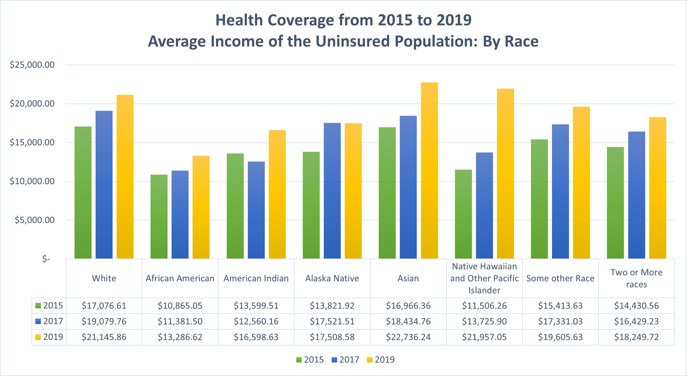

Overview
This project explored the demographic, social, and economic characteristics of uninsured Americans to determine which characteristics most accurately depict the majority of uninsured Americans.
Images & Screenshots
This graph depicts the change in average income among those without healthcare coverage by population.
Key Features
- Correlation analysis between poverty rates and education completion
- Time series visualizations highlighting multi-year trends
- Detailed analytics and education metrics
- Conditional logic (color coded results) for visualizing the trends
Technologies Used
- Infor Birst (cloud-based BI and analytics platform)
- Data transformation and ETL processes
- Infor Birst (cloud-based BI and analytics platform)
What I Did
- Collected and integrated multiple open datasets related to poverty, spending, and educational attainment
- Data transformation and ETL processes
- Configured detailed dashboard, with KPIs, and visual storytelling elements to explore disparities between communities
- Provided insights into how poverty is directly correlated to test scores
Challenges & Lessons
One challenge was aligning datasets from different sources with varying schemas and time ranges. I had to ensure data consistency and resolve mismatches in geographic granularity (e.g., county vs. state-level). Another lesson was in using Birst’s semantic layer and visual tools to empower non-technical users to explore complex relationships in the data. This project improved my understanding of data modeling and BI storytelling.